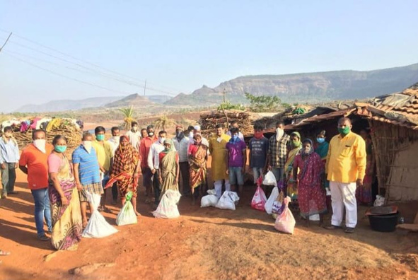

Samarth Foundation was born in Khed Taluka not from boardrooms but from the fields, the ration queues, and the quiet suffering of farming families. Every program we run is rooted in that origin.
In 2016, a group of social activists and legal professionals in Khed Taluka, Pune district, witnessed what data could never fully capture — farming families unable to afford school bags for their children, elderly women walking kilometres for basic healthcare, drought survivors with nothing to fall back on.
Samarth Foundation was registered (F48181/Pune) that year with a single conviction: systemic change must be built ground-up, one village at a time. Every program was shaped not by policy papers but by conversations held in the fields, at wells, and in the cramped homes of Khed’s farming families.
Today, nine years and 21+ villages later, the foundation runs six active programs, operates a mobile health unit, has deployed one ambulance, and is mid-way through Project Samruddhi — a three-year infrastructure, education, and digital health initiative connecting doorstep healthcare to every enrolled village.

We design every program so recipients feel empowered, not dependent. From distributing school bags in ceremonies to running health camps with specialists — the dignity of the community comes first.
No program gets launched without understanding the village first. Our team walks the land, meets the sarpanch, and listens before proposing any intervention. Communities design their own progress.
We publish our activities, impact numbers, and registrations openly. Every supporter deserves to know exactly where their contribution went and how it changed a life in Khed Taluka.
We do not run one-time camps and leave. Villages like Ningoan, Kanersar, and Retawadi have seen Shri Samarth year after year, program after program — building trust that cannot be imported from outside.
Samarth Foundation is governed by trustees who are rooted in the communities they serve — advocates, social workers, and professionals who give their time because they believe in the mission.
An advocate and social activist from Khed Taluka, Adv. Shinde Patil founded Samarth Foundation after years of working with marginalised farming communities in Pune district. His legal background informs the foundation’s strong governance practices; his roots in Khed ensure every program remains community-led and community-accountable. He continues to personally oversee field operations across all 21+ villages.
A seasoned administrator with deep ties to Khed Taluka’s gram panchayat network. Rajendra brings governance experience and village-level relationships that are essential to executing programs on the ground.
Leading the Mahila Asmita Bhavan and all women’s empowerment initiatives, Sunanda has spent over a decade advocating for rural women’s economic independence in Pune district.
Oversees the Arogya Shibir program and the Arogya Sewika network. Mahesh coordinates the mobile health unit and ambulance operations across 21 villages with logistics expertise built over a decade.
Nine years of work have shown us what is possible when communities and supporters commit together. Your partnership — as a donor, a CSR partner, or a volunteer — extends that reach further.
Get Involved